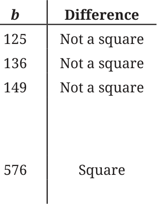
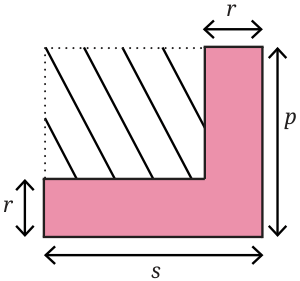

- Which is greater: \((a - b)^2\) or \((b - a)^2\)? Justify your answer.
Ans. Both are equal.
- Express 100 as the difference of two squares.
Ans. Try to find square numbers with a difference of 100.

\(676 - 576 = 100\) or \(26^2 - 24^2 = 100\)
Check for more such numbers.
- Find \(406^2\), \(72^2\), \(145^2\), \(1097^2\), and \(124^2\) using the identities you have learnt so far.
Ans.
- 164836
- 5184
- 21025
- 1203409
- 15376
- Do Patterns 1 and 2 hold only for counting numbers? Do they hold for negative integers as well? What about fractions? Justify your answer.
Ans. Pattern 1 and Pattern 2 hold for all numbers. Verify it by taking different values for a and b.
How many square tiles are there in each figure?
Ans.
Fig 1: \(8 = 3^2 - 1\), Fig 2: \(12 = 4^2 - 2^2\), Fig 3: \(16 = 5^2 - 3^2\)
How many are there in Step 4 of the sequence? What about Step 10?
Ans. Step 4: Number of squares \(= 6^2 - 4^2\). Step 10: Number of squares \(= 12^2 - 10^2\).
Write an algebraic expression for the number of tiles in Step n. Share your methods with the class. Can you find more than one method to arrive at the answer?
Ans. \((n + 2)^2 - n^2\)
Write an expression for the area of the dashed region in the figure below. Use more than one method to arrive at the answer. Substitute \(p = 6\), \(r = 3.5\), and \(s = 9\), and calculate the area.

Ans.
- \(ps - pr - sr + r^2\)
- 13.75 sq. units